04-1-微信报警
4.2 微信报警
1.微信报警原理流程
注册微信企业号，通过企业号提供的信息ID、以及获取微信的API接口，就可以将服务器的报警数据，发给API，发给微信，发给关注这个公众号的所有用户、
2.注册企业微信
https://work.weixin.qq.com/wework_admin/frame
3.修改通讯录组名
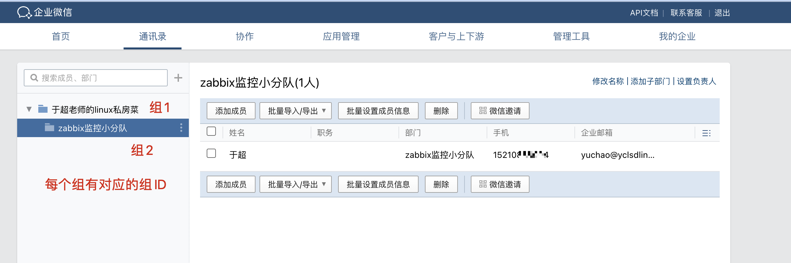
4.创建自定义zabbix应用
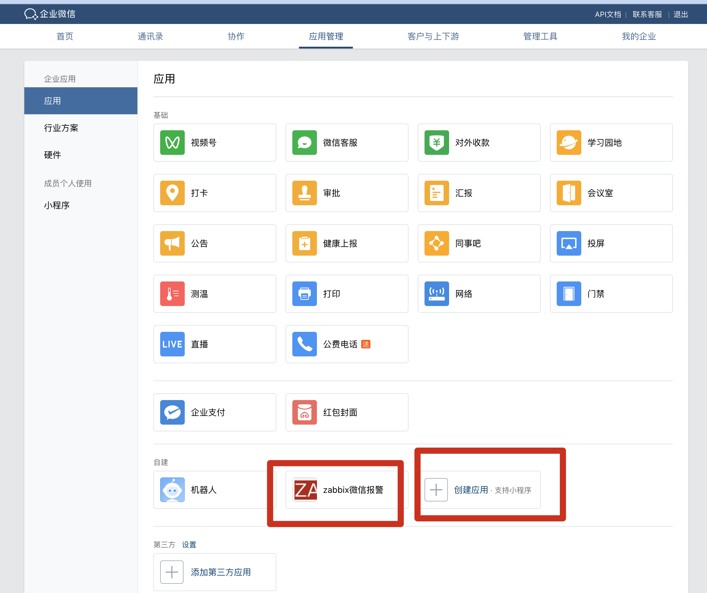
5.查看企业ID
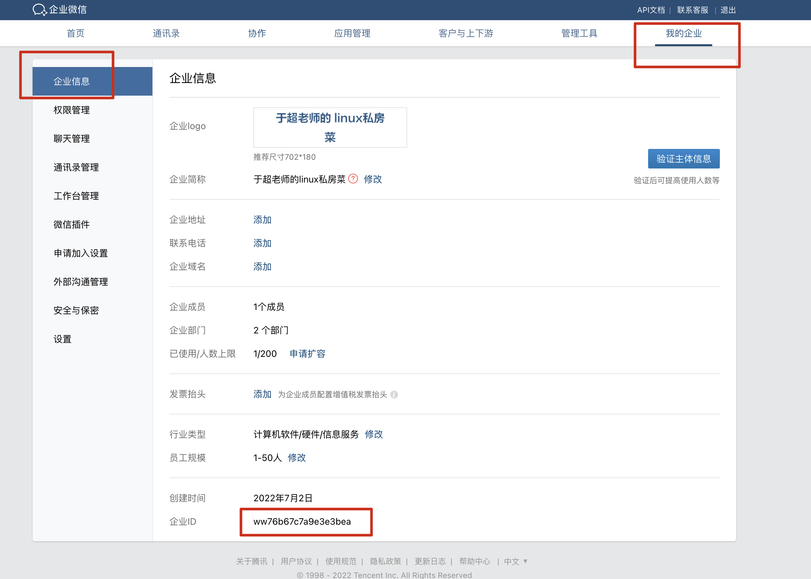
6.微信报警架构图逻辑图
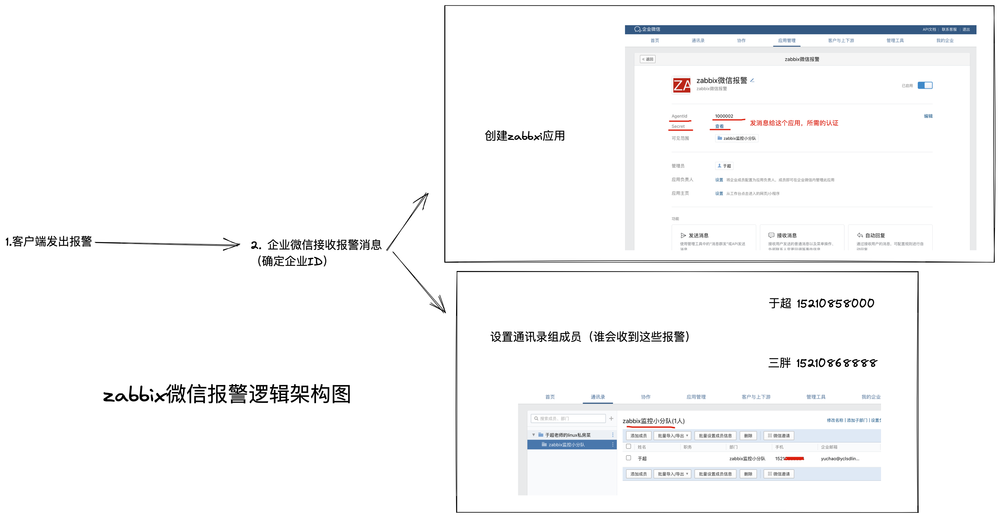
7.添加通信群组成员
想让其他人也加入到这个组，便于接收消息，因此需要邀请加入组。
扫码加入企业
加入监控小分队即可。
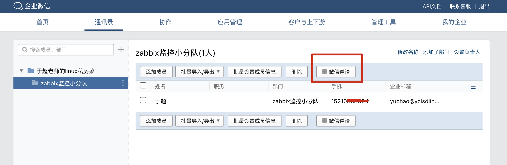
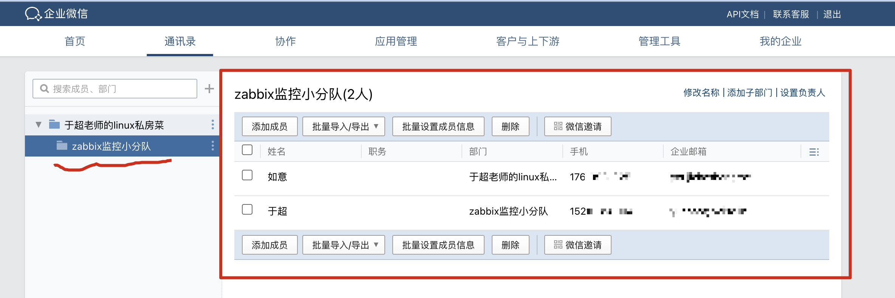
8.关注监控公众号（无须下载企业微信了）
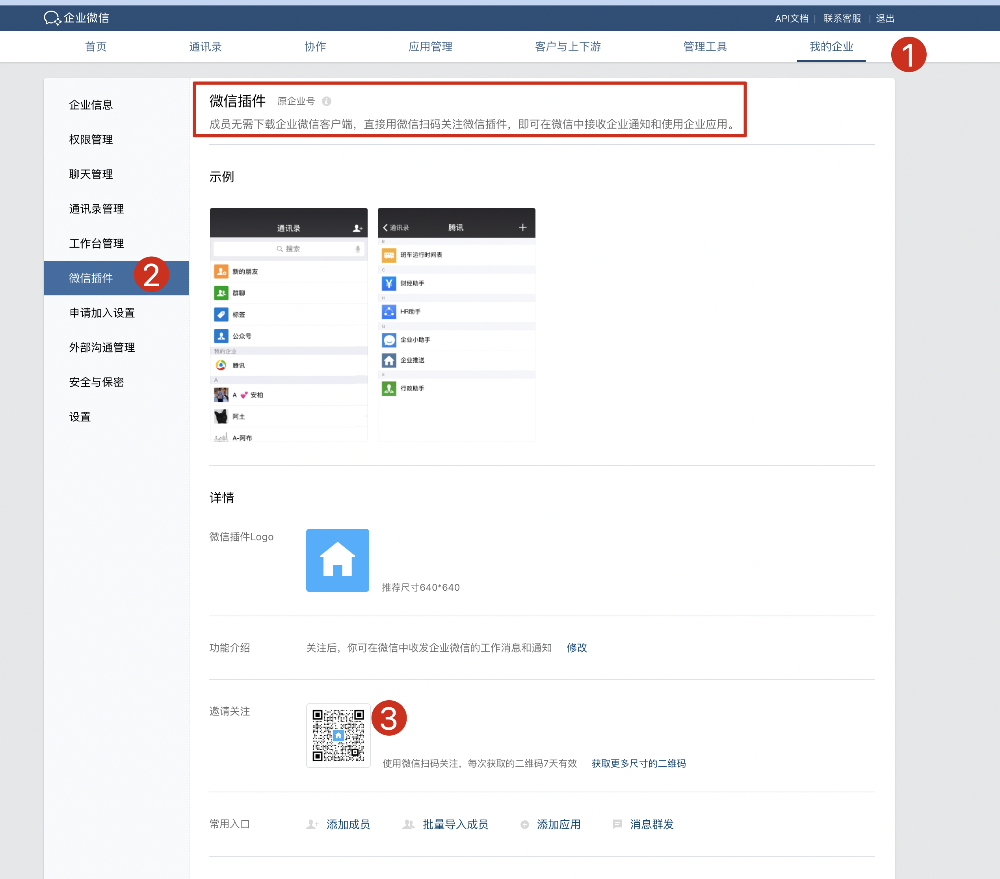
9.推送报警信息（python）
#!/usr/bin/env python3
# Author: www.yuchaoit.cn
import requests
import sys
import os
import json
import logging
# 日志格式构造
logging.basicConfig(level = logging.DEBUG, format = '%(asctime)s, %(filename)s, %(levelname)s, %(message)s',
datefmt = '%a, %d %b %Y %H:%M:%S',
filename = os.path.join('/tmp','weixin_python.log'),
filemode = 'a')
# 企业ID
corpid='ww76b67c7e3bea'
# 应用秘钥
appsecret='Z2LpWY2H15svWZXuXAzyxqCuGUWrDPKhhHvvnY'
# 应用id
agentid=1000002
# 获取身份令牌，用于和微信通信的认证
# 参考企业微信API文档https://developer.work.weixin.qq.com/document/path/90487
token_url='https://qyapi.weixin.qq.com/cgi-bin/gettoken?corpid=' + corpid +'&corpsecret=' + appsecret
req=requests.get(token_url)
accesstoken=req.json()['access_token']
msgsend_url='https://qyapi.weixin.qq.com/cgi-bin/message/send?access_token=' + accesstoken
# 构造消息体
#touser=sys.argv[1]
toparty=sys.argv[1]
subject=sys.argv[2]
# 发送微信消息的数据格式
message=sys.argv[2] + "\n\n" +sys.argv[3]
params={
#"touser": touser,
"toparty": toparty,
"msgtype": "text",
"agentid": agentid,
"text": {
"content": message
},
"safe":0
}
# 最终发请求
req=requests.post(msgsend_url, data=json.dumps(params))
# 调试请求发送结果
print(req.content)
# 记录日志
logging.info('sendto:' + toparty + ';;subject:' + subject + ';;message:' + message)
测试发微信(python)
# 参数1是发给哪个部门
# 参数2是主题
# 参数3是消息正文
# 装好所需模块
[root@m-61 ~]#yum install python3 python3-devel python3-pip
[root@m-61 ~]#pip3 install requests
# 发给部门消息
[root@m-61 ~]#python3 weixin_zabbix.py 2 "zabbix微信报警测试" "当前使用python脚本发送，发送人www.yuchaoit.cn"
[root@m-61 ~]#
坑记录，添加ip白名单
# 踩坑了，tmd，需要加入自建应用的ip白名单
# https://open.work.weixin.qq.com/devtool/query?e=60020
python3版本的坑
#!/usr/bin/env python3
别忘记，修改脚本的python解释器！！
10.推送报警信息(bash)
cat > weixin.sh << 'EOF'
#!/bin/bash
# Authror: www.yuchaoit.cn
#需要将下列信息修改为自己注册的企业微信信息 #应用ID
agentid='1000002'
#secretID
corpsecret='Z2LpWYv2tswSWZXuXAzyxqCuGUWrDPKhhHvvnY'
#企业ID
corpid='ww76b673e3bea'
#接受者的账户，由zabbix传入
#user=$1
#报警邮件标题，由zabbix传入
title=$2
#报警邮件内容，由zabbix传入
message=$3
# 接收信息的组
group=$1
#获取token信息，需要在链接里带入ID
token=$(curl -s -X GET "https://qyapi.weixin.qq.com/cgi-bin/gettoken?corpid=${corpid}&corpsecret=${corpsecret}"|awk -F \" '{print $10}')
#构造语句执行发送动作，发送http请求
curl -s -H "Content-Type: application/json" -X POST "https://qyapi.weixin.qq.com/cgi-bin/message/send?access_token=${token}" -d' {
"toparty" : "'"${group}"'",
"msgtype" : "text",
"agentid" : '"${agentid}"',
"text" : {
"content" : "'"${title}\n\n${message}"'"
},
"safe":0
}' >> /tmp/weixin_bash.log
#将报警信息写入日志文件
echo -e "\n报警时间:$(date +%F-%H:%M)\n报警标题:${title}\n报警内容:${message}" >> /tmp/weixin_bash.log
EOF
bash发报警
[root@m-61 ~]#bash weixin.sh 2 "bash还是不如python美丽啊" "bash发送报警了！！"
[root@m-61 ~]#
11.最终微信效果
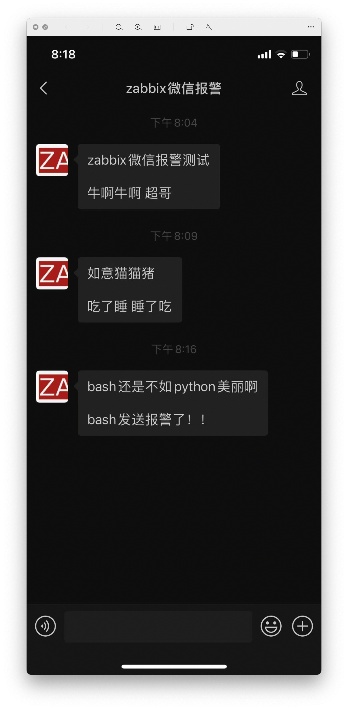
12.zabbix页面配置微信报警
脚本发送报警信息，调试通过后，最终还是希望zabbix实现报警触发。
添加报警媒介类型
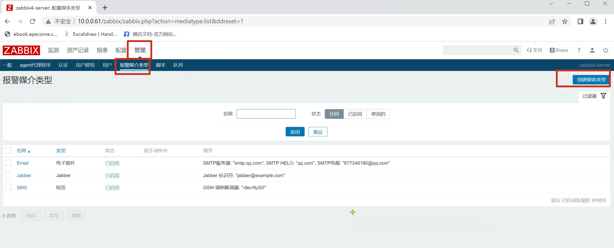
添加报警参数，参考zabbix官网文档
https://www.zabbix.com/documentation/3.4/zh/manual/config/notifications/media/script
宏参数查询
https://www.zabbix.com/documentation/3.4/zh/manual/appendix/macros/supported_by_location
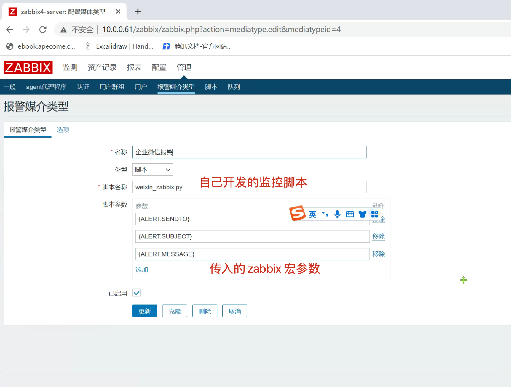
zabbix配置文件设置目录
需要告诉zabbix，你自定义的脚本在什么目录
[root@m-61 ~]#grep '^AlertScriptsPath' /etc/zabbix/zabbix_server.conf
AlertScriptsPath=/usr/lib/zabbix/alertscripts
[root@m-61 /usr/lib/zabbix/alertscripts]#ls
weixin.sh weixin_zabbix.py
于超老师提醒，少一步都是坑，哈哈哈，辛酸
[root@m-61 /usr/lib/zabbix/alertscripts]#chmod +x weixin_zabbix.py
用户设置报警媒介
请注意，这里的收件人，是指微信的组，或者微信的联系人！
传入的参数，超哥这里是传入的2，是zabbix监控小组的id。
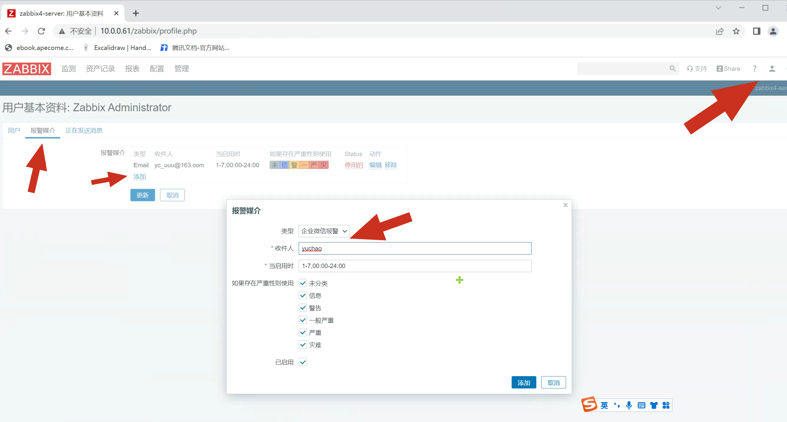
13.完结收工（测测微信有报警吗）
[root@m-61 /usr/lib/zabbix/alertscripts]#ab -c 100 -n 100000 http://10.0.0.7/
可以检测日志
tail -f /tmp/weixin.log
Sat, 02 Jul 2022 22:16:45, connectionpool.py, DEBUG, Starting new HTTPS connection (1): qyapi.weixin.qq.com:443
Sat, 02 Jul 2022 22:16:45, connectionpool.py, DEBUG, https://qyapi.weixin.qq.com:443 "GET /cgi-bin/gettoken?corpid=ww76b67c7a9e3e3bea&corpsecret=Z2LpWY2H15sv2tswSWZXuXAzyxqCuGUWrDPKhhHvvnY HTTP/1.1" 200 277
Sat, 02 Jul 2022 22:16:45, connectionpool.py, DEBUG, Starting new HTTPS connection (1): qyapi.weixin.qq.com:443
Sat, 02 Jul 2022 22:16:46, connectionpool.py, DEBUG, https://qyapi.weixin.qq.com:443 "POST /cgi-bin/message/send?access_token=_tIBkDweSW5UD0RoNnkuNQp0hmBe8ILlEUb6l3gdZuLVOArculwDJRiXy02chWt7VgQNHi6KFhU7Vu16lwwMqnEvRYL0n-ttIy33PmUt0ohiV5tUXc6rBOWCT1ZKH6TDHZAlospAUzVtVCdmcGxahiNLherauix-wX4K8gLYnsWdu50QxMA-ksViff-qDI4nc0ISrSxBgOa_338Pf_Ss_A HTTP/1.1" 200 124
Sat, 02 Jul 2022 22:16:46, weixin_zabbix.py, INFO, sendto:2;;subject:恢复OK, 服务器:web7: TIME_WAIT连接数太多已恢复!;;message:恢复OK, 服务器:web7: TIME_WAIT连接数太多已恢复!
Author: www.yuchaoit.cn
告警主机:web7
告警时间:2022.07.02 22:15:42
告警等级:Warning
告警信息: TIME_WAIT连接数太多
告警项目:tcp_status[TIME_WAIT]
问题详情:TIME_WAIT监控:64
当前状态:OK:64
事件ID:94
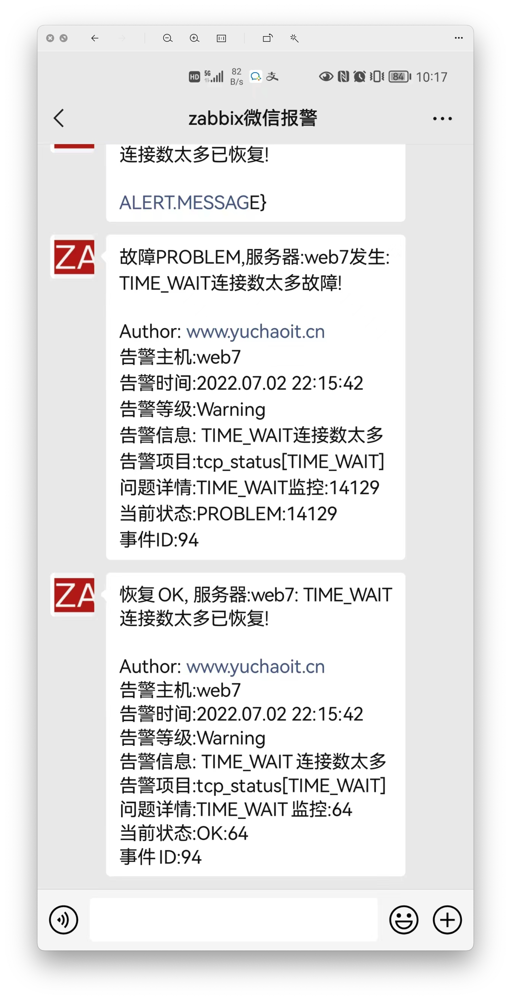